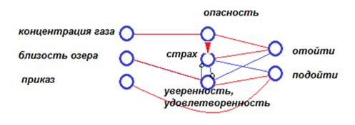
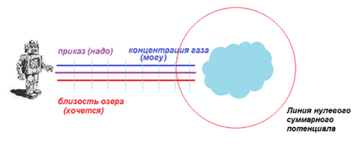

Могут ли роботы ошибаться? Писатель-фантаст А. Азимов написал шуточный рассказ «Хоровод», астронавты отправляют робота добыть ведро селена из инопланетного озера. Озеро опасно и чем оно ближе, тем больше у робота опасения, что он погибнет от испарений селена. Но приказ есть приказ, и, чем ближе озеро, тем ближе заветная цель.
Составив и запустив в работу нейронную сеть, можно с удивлением обнаружить, что робот остановится на определённом расстоянии от озера и начнет кружить вокруг него. Робот не может подойти ближе к озеру, так как чувство опасности становится больше чувства долга и желания достичь цель. Нельзя отойти от озера, так как чувство долга станет больше чувства опасности и снова толкнет робота к озеру. На некотором расстоянии от озера потенциалы долга, желания, опасности уравняются и робот двинется по линии нулевого суммарного потенциала - вокруг озера. И навсегда останется там в вечном кружении.


Посмотрите на рисунок, где находятся наши чувства? Они живут внутри нейронной сети. Проявляются чувства как воздействия на внешний мир (трусить, атаковать),
а если действия невозможны или преждевременны, то демонстрируются в виде эмоций жестами или мимикой. Чувства – это сложные комбинации наших ощущений внешнего
мира, получаемых через рецепторы.
Совокупность привычных реакций на внешний мир составляет характер робота. Договоренности в виде правил поведения в обществе о допустимых и недопустимых реакциях на
конкретные ситуации называются моралью. До появления христианства существовало правило «око за око, зуб за зуб», которое осталось ещё кое-где у отсталых сообществ
с жёсткой средой обитания. Две тысячи лет назад христианство провозгласило новые правила. По легенде они были даны на скрижалях Моисея. Многие из них вы хорошо знаете:
«не убий», «не укради», «почитай мать и отца своих», «люби ближнего твоего, как самого себя», «не лжесвидетельствуй». Соблюдение моральных правил гарантирует стабильность
в обществе и безопасность его членов. Нарушающие мораль индивидуумы насильно изолируются от общества в исправительных учреждениях. Перечень чувств, препятствующих нормальной
жизнедеятельности человека, в христианстве назвали грехами: гордыня, неблагодарность, жадность, гнев, лень, зависть, чревоугодие, похоть.
Теперь мораль должна распространяться и на роботов, активно контактирующих с обществом, в силу появления четвертой линии развития материи. А. Азимов сформулировал три закона робототехники.
- Робот не может причинить вред человеку или своим бездействием допустить, чтобы человеку был причинён вред.
- Робот должен повиноваться всем приказам, которые даёт человек, кроме тех случаев, когда эти приказы противоречат Первому Закону.
- Робот должен заботиться о своей безопасности в той мере, в которой это не противоречит Первому или Второму Законам.
Хорошие правила, но встал вопрос, как это реализовать?
Валентино Брайтенберг задумал найти в нейронной сети сложные восприятия, которые мы в совокупности называем душевными качествами: восторг, любопытство, радость,
разочарование, симпатия, дружба, любовь, грусть, уныние, скука, отчаяние, испуг, ужас, жалость, недоверие, ... .
Чувства очень важны для нас, так как влияют на наш метаболизм, кровообращение через выброс гормонов и другие физиологические процессы. Они способны замедлять или ускорять
реакции, повышать или понижать уровень нами выделяемой энергии, положительно или отрицательно влиять на восприятие, внимательность и многое другое.
Для понимания этих процессов были изготовлены машинки. Платформа имела два задних ведущих колеса, каждое со своим индивидуальным электрическим мотором, и два передних.
Два фотодатчика спереди были соединены с моторами задних колёс. Чем больше света поступало в левый датчик, тем сильнее раскручивался мотор левого колеса.
Чем больше света поступало в правый датчик, тем сильнее раскручивался мотор правого колеса.
У второй машинки связь от левого датчика шла к правому мотору, а от правого датчика - к левому. У третьей машинки в связь датчика и исполнительного устройства был
вставлен нейрон, меняющий логику сигнала. И так далее. Следующие машинки имели вставки в виде постепенно усложняющихся нейронных сетей.
В лаборатории университета на полу были расставлены лампочки. Студенты, не зная схем машинок, наблюдали за их поведением и давали машинкам умозрительные характеристики
(дружелюбность, влюблённость, агрессивность и так далее). Поскольку мы не можем пока спроектировать целенаправленно нейронную сеть, которая будет испытывать к нам,
например, чувство дружбы, то Брайтенберг синтезировал нейронные сети наугад (от простого к сложному) и пытался увидеть, какая сеть ведёт к какому душевному качеству.
Первая машинка отворачивала от источника света и забивалась в тёмный угол. Происходило это потому, что чем больше фотонов от лампочки попадало в левый датчик, тем быстрее
крутилось левое колесо по сравнению с правым. Таким образом, машинка отворачивала все дальше от лампочки вправо и уезжала в темноту, где, замедлив свой бег, останавливалась
в углу и «переживала в одиночестве».
Вторая машинка с перекрёстными связями наоборот нацеливалась на лампочку, подруливая то одним колесом, то другим. Чем ближе к лампочке подъезжала машинка, тем больше фотонов
попадало в датчики, тем быстрее крутились её колеса. Машинка на большой скорости врезалась в лампочку, разбивала её и разочарованно кружила по лаборатории в поисках
следующей цели. Так как в результате происшествия среда меняла свои свойства, то другие машинки тоже меняли свои цели, демонстрируя коллективное поведение.
Чем сложнее была нейронная сеть, тем сложнее было проявление машинками чувств. Опыт усложняли, меняя окружающую среду. На полу появились горки песка, которые экранировали свет лампочек, давали тени, машинки
испытывали пробуксовки, скольжения и случайные повороты. Машинкам также добавляли датчики, реагирующие на звук, тепло, определенный цвет света. Поскольку машинки покрасили в разные
цвета, то отдельные машинки стали выделять среди других экземпляров любимые, преследовать их, проявлять симпатию или агрессию. Машинки ловили звуки и тепловой след, сложно
взаимодействовали друг с другом. Некоторые машинки научились отличать добычу от неживых предметов, ожидать в засаде, избегать и огибать препятствия, обобщать информацию,
вырабатывали внутри себя картину мира и систему ценностей.
Генетическим алгоритмом можно запустить эволюцию нейронных сетей в сообществе машинок по принципу «Делаем, там посмотрим, что получится. Хорошее останется, плохое отомрет».
Задания
- Спроектируйте имитатор крылатой ракеты, машинку, захватывающую в поле зрения жертву и преследующую её.
- Спроектируйте машинку, которая любит проводить время в компании с друзьями, машинками похожими на нее.